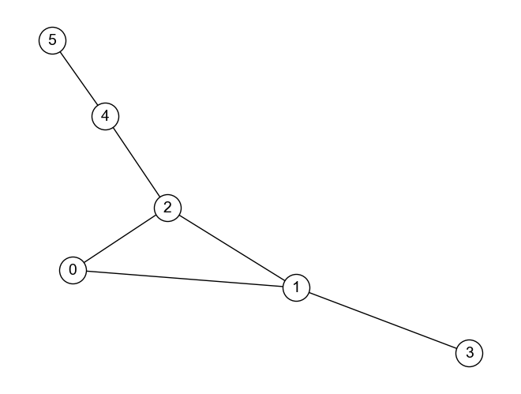
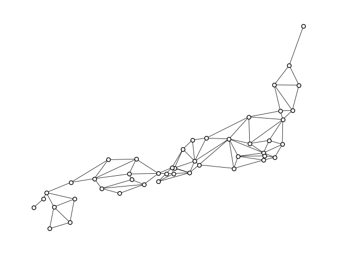

ノードの中心性#
Show code cell source
import numpy as np
import networkx as nx
%matplotlib inline
クイズ#
Q1: 近接中心性#
以下のグラフ\(G_{bull}\)に属する各ノードの近接中心性について，closeness_centrality関数を用いずに計算するコードを書きなさい．

import networkx as nx
# グラフの定義
G_bull = nx.Graph([(0, 1), (1, 2), (2, 0), (1, 3), (2, 4), (4, 5)])
# 各ノードについて近接中心性の計算をする
for node_from in G_bull.nodes():
dists = []
for node_to in G_bull.nodes():
if node_from != node_to:
shortest_path = nx.shortest_path(G_bull, node_from, node_to)
dist = len(shortest_path) - 1
dists.append(dist)
closeness_centrality = len(dists) / sum(dists)
print(f'ノード{node_from}の近接中心性:', closeness_centrality)
ノード0の近接中心性: 0.5555555555555556
ノード1の近接中心性: 0.625
ノード2の近接中心性: 0.7142857142857143
ノード3の近接中心性: 0.4166666666666667
ノード4の近接中心性: 0.5555555555555556
ノード5の近接中心性: 0.38461538461538464
Q2: どんなグラフ？#
ノード数が5のグラフのうち，以下の条件を満たすノードを持つグラフの例を考えなさい．
次数中心性，近接中心性，媒介中心性のいずれも最大値を持つノードが同一であるような無向グラフ
次数中心性，近接中心性，媒介中心性の値がすべてのノードで同じになる無向グラフ
出次数中心性は最大値を取るが，媒介中心性は最小値を取るノードが存在する有向グラフ
# グラフの定義
G_Q2_1 = nx.star_graph(4)
nx.draw(G_Q2_1, **DRAW_CONFIG)
# 各中心性スコア
print('次数中心性:', nx.degree_centrality(G_Q2_1))
print('近接中心性:', nx.closeness_centrality(G_Q2_1))
print('媒介中心性:', nx.betweenness_centrality(G_Q2_1))
次数中心性: {0: 1.0, 1: 0.25, 2: 0.25, 3: 0.25, 4: 0.25}
近接中心性: {0: 1.0, 1: 0.5714285714285714, 2: 0.5714285714285714, 3: 0.5714285714285714, 4: 0.5714285714285714}
媒介中心性: {0: 1.0, 1: 0.0, 2: 0.0, 3: 0.0, 4: 0.0}
# グラフの定義
G_Q2_2 = nx.complete_graph(5)
nx.draw(G_Q2_2, **DRAW_CONFIG)
# 各中心性スコア
print('次数中心性:', nx.degree_centrality(G_Q2_2))
print('近接中心性:', nx.closeness_centrality(G_Q2_2))
print('媒介中心性:', nx.betweenness_centrality(G_Q2_2))
次数中心性: {0: 1.0, 1: 1.0, 2: 1.0, 3: 1.0, 4: 1.0}
近接中心性: {0: 1.0, 1: 1.0, 2: 1.0, 3: 1.0, 4: 1.0}
媒介中心性: {0: 0.0, 1: 0.0, 2: 0.0, 3: 0.0, 4: 0.0}
# グラフの定義
G_Q2_3 = nx.DiGraph([
(0, 1), (0, 2), (0, 3), (0, 4),
# (1, 0), (2, 0), (3, 0), (4, 0),
(1, 2), (2, 3), (3, 4), (4, 1)
])
pos = nx.spring_layout(G_Q2_3, seed=123)
nx.draw(G_Q2_3, pos, **DRAW_CONFIG)
# 各中心性スコア
print('出次数中心性:', nx.out_degree_centrality(G_Q2_3))
print('近接中心性:', nx.closeness_centrality(G_Q2_3))
print('媒介中心性:', nx.betweenness_centrality(G_Q2_3))
出次数中心性: {0: 1.0, 1: 0.25, 2: 0.25, 3: 0.25, 4: 0.25}
近接中心性: {0: 0.0, 1: 0.5714285714285714, 2: 0.5714285714285714, 3: 0.5714285714285714, 4: 0.5714285714285714}
媒介中心性: {0: 0.0, 1: 0.25, 2: 0.25, 3: 0.25, 4: 0.25}
Q3: 都道府県の近接中心性，次数中心性，媒介中心性#

上のグラフ\(G_{prefecture}\)は，沖縄県を除く日本の都道府県をノード，都道府県間の陸路の存在をエッジとして可視化したものである． グラフ\(G_{prefecture}\)に含まれる各ノード（都道府県）について，その近接中心性，次数中心性，媒介中心性を計算し，各指標の上位3件を求めなさい．
なお，グラフ\(G_{prefecture}\)に関するデータはコチラからダウンロード可能である． また，以下のコードを書くとダウンロードしたファイルをNetworkX形式のグラフとして読み込める．
import networkx as nx
# ダウンロードしたデータは`data/prefecture/prefecture.adjlist`にあると想定
G_prefecture = nx.read_adjlist("data/prefecture/prefecture.adjlist")
# 近接中心性
sorted(nx.closeness_centrality(G_prefecture).items(), key=lambda x: -x[1])[:3]
[('三重県', 0.26011560693641617),
('岐阜県', 0.2571428571428571),
('京都府', 0.2556818181818182)]
# 次数中心性
sorted(nx.degree_centrality(G_prefecture).items(), key=lambda x: -x[1])[:3]
[('長野県', 0.17777777777777778),
('埼玉県', 0.15555555555555556),
('岐阜県', 0.15555555555555556)]
# 媒介中心性
sorted(nx.betweenness_centrality(G_prefecture).items(), key=lambda x: -x[1])[:3]
[('兵庫県', 0.4714646464646465),
('京都府', 0.45496477035870975),
('長野県', 0.3308831387467748)]
Q4: 空港の次数中心性，媒介中心性，固有ベクトル中心性#
from IPython.display import IFrame
IFrame("../../airport.html", width=750, height=650)
上のグラフ\(G_{airport}\)は，日本の主要な空港をノード，空港間でANA（全日空）の航路が存在することをエッジとして可視化したものである． グラフ\(G_{airport}\)に含まれる各ノード（空港）について，その次数中心性，媒介中心性，固有ベクトル中心性を計算し，各指標の上位5件を求めなさい．
なお，グラフ\(G_{airport}\)に関するデータはコチラからダウンロード可能である． また，以下のコードを書くとダウンロードしたファイルをNetworkX形式のグラフとして読み込める．
import networkx as nx
# ダウンロードしたデータは`data/airport/ana.adjlist`にあると想定
G_ana = nx.read_adjlist("../data/airport/ana.adjlist")
# 次数中心性
sorted(nx.degree_centrality(G_ana).items(), key=lambda x: -x[1])[:5]
[('東京（羽田）', 0.7),
('札幌（新千歳）', 0.3833333333333333),
('沖縄（那覇）', 0.3333333333333333),
('大阪（伊丹）', 0.3),
('名古屋（中部）', 0.25)]
# 媒介中心性
sorted(nx.betweenness_centrality(G_ana).items(), key=lambda x: -x[1])[:5]
[('東京（羽田）', 0.6089280368093929),
('鹿児島', 0.14800690521029508),
('札幌（新千歳）', 0.132759359284783),
('沖縄（那覇）', 0.11018556459234428),
('大阪（伊丹）', 0.09039116878099929)]
# 固有ベクトル中心性
sorted(nx.eigenvector_centrality(G_ana).items(), key=lambda x: -x[1])[:5]
[('東京（羽田）', 0.457999320160654),
('沖縄（那覇）', 0.3074869102083056),
('札幌（新千歳）', 0.3064340279779271),
('大阪（伊丹）', 0.29359335171993056),
('名古屋（中部）', 0.27764154174853667)]